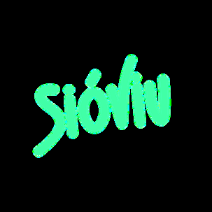
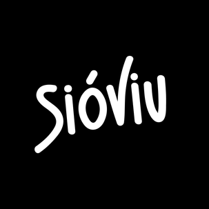

MEDI
Tarroja de Segarra, la Prenyanosa i els pobles veïns conformen un entorn rural singular. Paisatges de secà vius i canviants amb les estacions, camps que parlen de la nostra història i un teixit humà fort que manté vius aquests petits nuclis que són casa nostra.

Som veïns i veïnes organitzats des del voluntariat i sense ànim de lucre, que treballem per aturar els macroprojectes industrials de biogàs que afecten directament els nostres pobles, posant en risc la qualitat de vida de tots i el futur del nostre entorn.

El projecte consisteix en la construcció de dues plantes de dimensions industrials dissenyades per rebre, emmagatzemar i tractar grans volums de residus orgànics (habitualment residus ramaders, agrícoles, restes d'escorxadors, cadàvers d'animals, fangs de depuradora, aigües residuals i fangs industrials) amb l'objectiu de produir gas.
Es planifica col·locar-les a menys d'1,5 quilòmetres dels nuclis urbans de Tarroja de Segarra i la Prenyanosa, tot i que el vent i les possibles filtracions poden fer arribar pudors i contaminants molt més lluny afectant a més pobles de la zona com Malgrat, Castellnou, La Cardosa, Sedó...

Recreació del projecte, generada amb IA
L'evidència i els estudis en zones afectades adverteixen de la dispersió de bioaerosols carregats de bacteris, fongs i virus, que poden propagar-se a quilòmetres de distància. L'exposició a aquestes partícules i a gasos nocius que generen aquestes instal·lacions incrementa el risc d'infeccions respiratòries, al·lèrgies cròniques i d'altres malalties.
Projectes d'aquesta magnitud es tradueixen en pudors insuportables, sorolls constants i trànsit diari de desenes de camions pesants per les nostres carreteres. Més perill a la xarxa viària, més emissions de CO2...
Una macroplanta de biogàs no és un projecte d'energia verda; és una amenaça directa als recursos naturals de la zona. Elevat consum d'aigua, risc de filtracions, contaminació d'aqüífers i abocament massiu de digestat (residu) que pot provocar pèrdua de fertilitat dels camps i la saturació del sòl.
Defensem la nostra manera de viure i el nostre entorn. Aquests macroprojectes transformaran irreversiblement el paisatge de la Segarra, degradant el seu valor natural i identitari. Provocarà una devaluació econòmica de les propietats, sentenciarà el turisme rural i els projectes locals, i accelerarà el despoblament de la zona.
Aturar aquests projectes és una batalla legal que requereix recursos i assessorament tècnic.
Per respondre amb la màxima fermesa jurídica ens cal la força de la gent.
Ens financem exclusivament amb la transparència de les aportacions veïnals dels associats i donacions.
Cada aportació, cada nou soci/a és de gran ajuda.
Amb una quota anual mínima (0,33 €/dia) ajudes a mantenir l'estructura de la plataforma de forma permanent.
Click aquí per associar-teBizum 6XX 123 456
Click aquí per associar-teAdhereix-te al manifest com a col·lectiu compromès amb la comarca.
Click aquí per adherir-te
GRANS FONS D'INVERSIONS VOLEN CONVERTIR ELS NOSTRES POBLES EN ABOCADORS,
ELLS TENEN ELS DINERS, NOSALTRES EL SUPORT DE LA GENT


Per obtenir biometà de fins a 200.000 tones anuals de residus ramaders. S'ubicaria en un punt estratègic, que té una gran cabanya tant de bestiar porcí com de boví